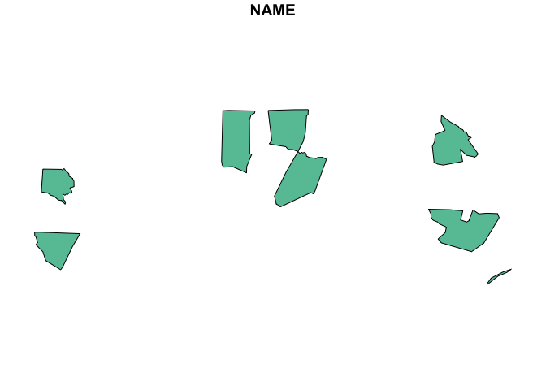
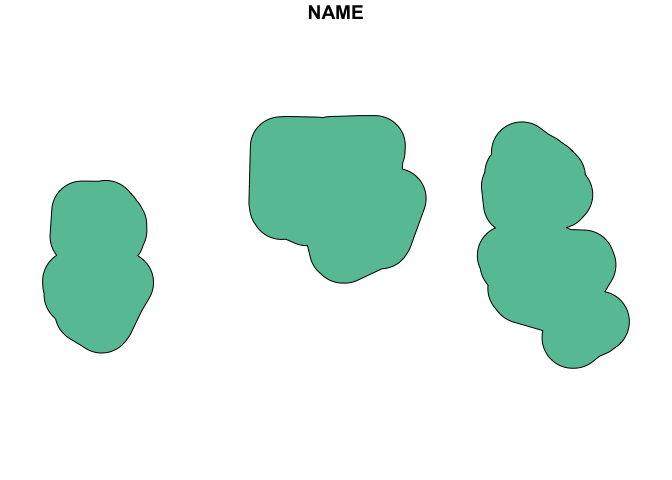
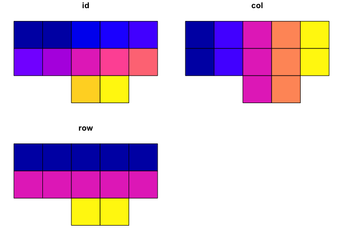
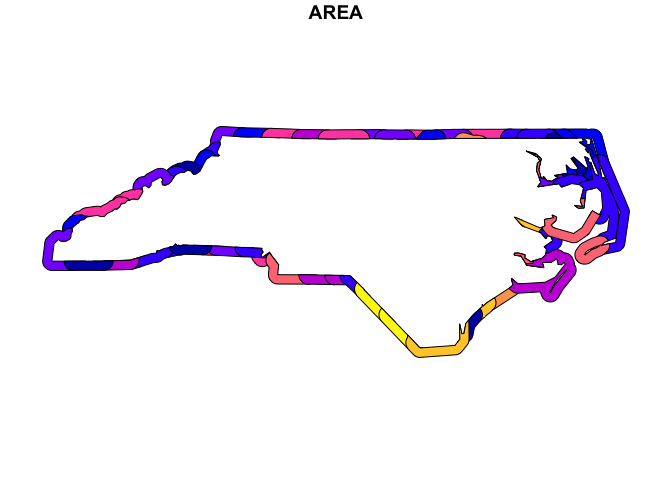
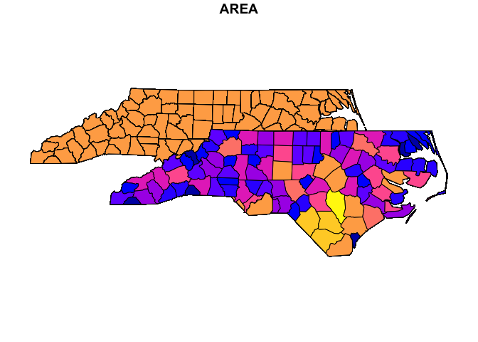
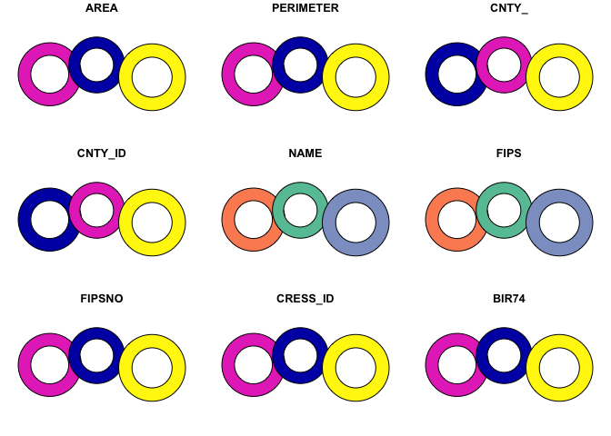
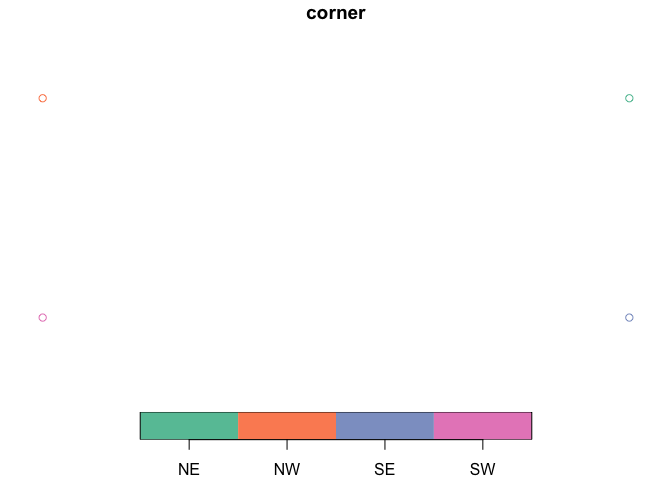

The goal of sfext is to extend existing functions from the {sf} package and offer a range of additional options for working with simple feature objects, bounding boxes, and data frame objects with coordinates or other spatial information.
Installation
You can install the development version of sfext like so:
# pak::pkg_install("elipousson/sfext")Usage
Extending existing {sf} functions
sfext is built around existing sf functions but designed to offer greater flexibility around both inputs and outputs. For example, read_sf_ext() is a wrapper for sf::read_sf() and offers a similar functionality:
nc <- read_sf_ext(system.file("shape/nc.shp", package = "sf"))However, read_sf_ext() also supports URLs for Google Sheets, FeatureLayers, data included with an installed package, and a variety of other sources. The function also supports an optional bounding box filter.
read_sf_ext("https://carto.nationalmap.gov/arcgis/rest/services/govunits/MapServer/29", bbox = as_bbox(nc))
#> ── Downloading "National Park" from <]8;;https://carto.nationalmap.gov/arcgis/rest/services/govunits/MapServer/29https://carto.nationalmap.gov/arcgis/rest/s]8;;
#> Layer type: "Feature Layer"
#> Geometry type: "esriGeometryPolygon"
#> Service CRS: "EPSG:3857"
#> Output CRS: "EPSG:3857"
#>
#> Simple feature collection with 11 features and 19 fields
#> Geometry type: MULTIPOLYGON
#> Dimension: XY
#> Bounding box: xmin: -13326920 ymin: 4005420 xmax: -7672089 ymax: 5887098
#> Projected CRS: WGS 84 / Pseudo-Mercator
#> First 10 features:
#> OBJECTID PERMANENT_IDENTIFIER SOURCE_FEATUREID
#> 1 6533 2216d26b-da64-4b83-b316-449f9b44b1d0 MAPR
#> 2 6564 7086b7cc-08b6-4a4b-8faa-5b9d94d97f4a KIMO
#> 3 6669 f135ee2b-e71d-4bce-8cc2-be7cfb7bbcd4 WRBR
#> 4 6706 d9eec3c0-ae13-4ef9-a17b-dc4858cd39d4 CALO
#> 5 6755 c248d769-1a64-4b77-a215-d4d58f361cbc BLRI
#> 6 6796 643dde5f-5633-4af5-b0b8-f61540ddbf61 CAHA
#> 7 6804 bc97c677-3de2-478b-9d41-6da7ce83f29e GRSM
#> 8 7571 adf43046-fa1b-4bdc-8341-031e00ed799a CUGA
#> 9 7574 8aa2a0c5-aec3-4b30-8795-14d18265a8b8 CHAT
#> 10 7583 7cc31c7a-dda3-4b97-9fac-006c34c5c8b1 GUCO
#> SOURCE_DATASETID SOURCE_DATADESC
#> 1 {562524A1-7D6A-40EA-AA44-2E9AEF4488EB} National Park Boundaries 3/2020
#> 2 {562524A1-7D6A-40EA-AA44-2E9AEF4488EB} National Park Boundaries 3/2020
#> 3 {562524A1-7D6A-40EA-AA44-2E9AEF4488EB} National Park Boundaries 3/2020
#> 4 {562524A1-7D6A-40EA-AA44-2E9AEF4488EB} National Park Boundaries 3/2020
#> 5 {562524A1-7D6A-40EA-AA44-2E9AEF4488EB} National Park Boundaries 3/2020
#> 6 {562524A1-7D6A-40EA-AA44-2E9AEF4488EB} National Park Boundaries 3/2020
#> 7 {562524A1-7D6A-40EA-AA44-2E9AEF4488EB} National Park Boundaries 3/2020
#> 8 {02A04210-8E12-46EA-89C7-B48F91616971} National Park Boundaries 9/2020
#> 9 {02A04210-8E12-46EA-89C7-B48F91616971} National Park Boundaries 9/2020
#> 10 {02A04210-8E12-46EA-89C7-B48F91616971} National Park Boundaries 9/2020
#> SOURCE_ORIGINATOR DATA_SECURITY DISTRIBUTION_POLICY LOADDATE GNIS_ID
#> 1 National Park Service 5 E4 1.586355e+12 2775864
#> 2 National Park Service 5 E4 1.586355e+12 1223739
#> 3 National Park Service 5 E4 1.586355e+12 1027483
#> 4 National Park Service 5 E4 1.586355e+12 1000889
#> 5 National Park Service 5 E4 1.586355e+12 1009494
#> 6 National Park Service 5 E4 1.586355e+12 982628
#> 7 National Park Service 5 E4 1.586355e+12 1018241
#> 8 National Park Service 5 E4 1.602058e+12 490476
#> 9 National Park Service 5 E4 1.602058e+12 1688073
#> 10 National Park Service 5 E4 1.602058e+12 986193
#> NAME AREASQKM FTYPE FCODE
#> 1 Manhattan Project National Historical Park 0.4598436 674 67400
#> 2 Kings Mountain National Military Park 15.9040186 674 67400
#> 3 Wright Brothers National Memorial 1.7347265 674 67400
#> 4 Cape Lookout National Seashore 115.0050251 674 67400
#> 5 Blue Ridge Parkway 384.0079655 674 67400
#> 6 Cape Hatteras National Seashore 125.9856098 674 67400
#> 7 Great Smoky Mountains National Park 2096.4740275 674 67400
#> 8 Cumberland Gap National Historical Park 98.4687290 674 67400
#> 9 Chattahoochee River National Recreation Area 48.0789992 674 67400
#> 10 Guilford Courthouse National Military Park 0.9179617 674 67400
#> ADMINTYPE OWNERORMANAGINGAGENCY SHAPE_Length SHAPE_Area
#> 1 1 13 14168.45 776550.8
#> 2 1 13 22120.44 23836721.4
#> 3 1 13 9434.39 2657056.5
#> 4 1 13 233295.32 171056451.0
#> 5 1 13 2202935.37 596234809.6
#> 6 1 13 345532.78 190369152.0
#> 7 1 13 808754.04 3178103336.6
#> 8 1 13 164570.70 153181997.9
#> 9 1 13 326590.96 70142647.4
#> 10 1 13 10228.17 1410140.4
#> GNIS_NAME geoms
#> 1 Manhattan Project National Historical Park MULTIPOLYGON (((-9394763 42...
#> 2 Kings Mountain National Military Park MULTIPOLYGON (((-9062982 41...
#> 3 Wright Brothers National Memorial MULTIPOLYGON (((-8423490 43...
#> 4 Cape Lookout National Seashore MULTIPOLYGON (((-8468201 41...
#> 5 Blue Ridge Parkway MULTIPOLYGON (((-9271423 42...
#> 6 Cape Hatteras National Seashore MULTIPOLYGON (((-8415559 42...
#> 7 Great Smoky Mountains National Park MULTIPOLYGON (((-9267417 42...
#> 8 Cumberland Gap National Historical Park MULTIPOLYGON (((-9313282 43...
#> 9 Chattahoochee River National Recreation Area MULTIPOLYGON (((-9359559 40...
#> 10 Guilford Courthouse National Military Park MULTIPOLYGON (((-8886905 43...st_union_ext() is nearly identical to sf::st_union() but optionally preserve a name column (collapsing the values of that column into a single string):
random_id <- sample(nrow(nc), size = 8)
nc_union <- st_union_ext(nc[random_id, ], name_col = "NAME")
plot(
nc_union
)
st_buffer_ext() wraps sf::st_buffer() but accepts bounding box objects as an input, allows you to set the units for the buffer distance using a character string (automatically converts the buffer distance units to match the units of the input object):
# Apply a 20 mile buffer to the unioned geometry
plot(
st_buffer_ext(nc_union, dist = 20, unit = "mi")
)
st_make_grid_ext() wraps sf::st_make_grid() but makes it easy to set the dimensions of the grid using rows, columns, and an overall aspect ratio:
# Make a 5 by 5 grid with a 8.5 by 11 aspect ratio filtered to x
plot(
st_make_grid_ext(
x = nc,
asp = 11 / 8.5,
ncol = 5,
nrow = 5,
filter = TRUE
)
)
Most functions that include a crs parameter can convert the coordinate reference system of the output (using transform_sf() or sf_bbox_transform()). The crs parameter also supports sf, sfc, or bbox inputs. Functions that include a class parameter can convert the class of an object using as_sf_class(). There are a set of functions for class conversion that typically wrap multiple sf functions with more limited input options.
nc_bbox <- as_bbox(nc, crs = 4326)
nc_bbox
#> xmin ymin xmax ymax
#> -84.32377 33.88212 -75.45662 36.58973
as_sfc(nc[1, ], crs = 3857)
#> Geometry set for 1 feature
#> Geometry type: MULTIPOLYGON
#> Dimension: XY
#> Bounding box: xmin: -9099356 ymin: 4332928 xmax: -9043563 ymax: 4382074
#> Projected CRS: WGS 84 / Pseudo-Mercator
#> MULTIPOLYGON (((-9069486 4332928, -9077065 4338...
as_sf(nc_bbox, crs = nc)
#> Simple feature collection with 1 feature and 0 fields
#> Geometry type: POLYGON
#> Dimension: XY
#> Bounding box: xmin: -84.32386 ymin: 33.88198 xmax: -75.45697 ymax: 36.58967
#> Geodetic CRS: NAD27
#> geometry
#> 1 POLYGON ((-84.32385 33.8819...Please note this flexibility make sfext easy to use (especially in an interactive context) but likely not appropriate for reproducible research. The package is being actively developed and the API may change.
Additional helper functions for sf objects
sfext also includes several helper functions that add new features by combining functions from the {sf} package, using affine geometry, or adding features from other packages.
For example, st_edge() combines sf::st_buffer() and sf::st_difference() to get the “edges” of any geometry.

st_nudge() allows you to shift the position of an sf object to a new location:
nc_nudge <- st_nudge(nc, to = nc[1, ])
plot(
st_union_ext(
nc,
nc_nudge
),
max.plot = 1
)
st_donut() allows you to create donuts around existing features:
plot(
st_donut(nc[c(1, 2, 3), ])
)
#> Warning: plotting the first 9 out of 15 attributes; use max.plot = 15 to plot
#> all
Lastly, the package has a whole group of helper functions for bbox objects. For example, sf_bbox_corners() creates a sf object with POINT geometry based on the corners of a bounding box:
plot(
sf_bbox_corners(
as_bbox(nc)
)
)
Related projects
sfext depends on two other development packages:
- {papersize}: A collection of convenience functions extending grid, ggplot2, and patchwork to help in sizing plots and files for printing to paper, postcards, playing cards, and other physical media.
- {filenamr}: A package to help create and modify file names and paths (that also supports reading and writing EXIF metadata).
It is also used extensively by two other development packages:
- {getdata}: A package to make the experience of getting location data easier and more consistent across a wide variety of sources.
- {maplayer}: A consistent set of functions for creating map layers for {ggplot2} using simple feature data.
There are many packages that build on sf for a variety of specialized use cases. A few worth noting include:
- {sfdep}: A sf and tidyverse friendly interface to the spdep package for spatial dependence.
- {sfnetworks}: Tidy Geospatial Networks in R.
- {sfhotspot}: A set of functions to identify and understand clusters of points (typically representing the locations of places or events).
- {sfx}: Extra ‘sf’ Simple Features manipulations.